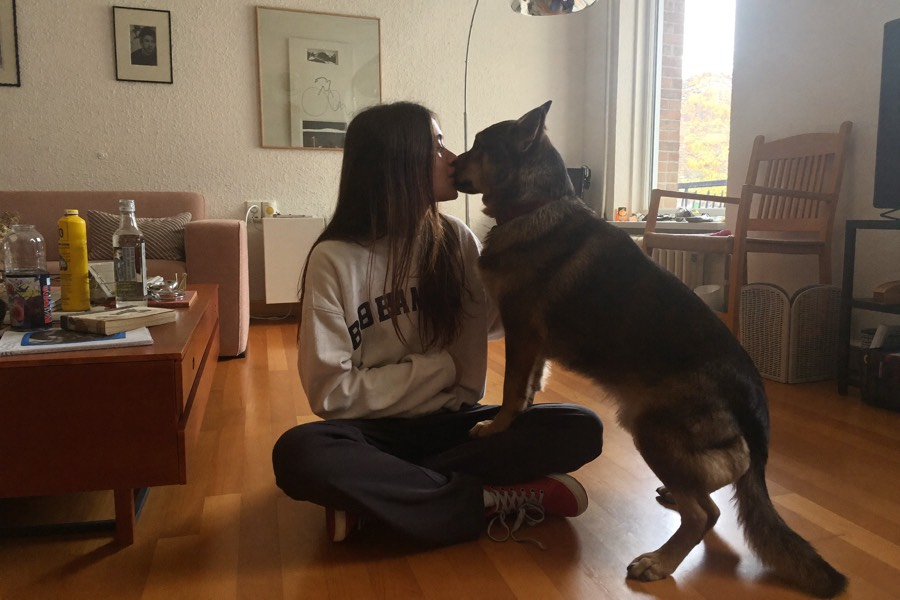
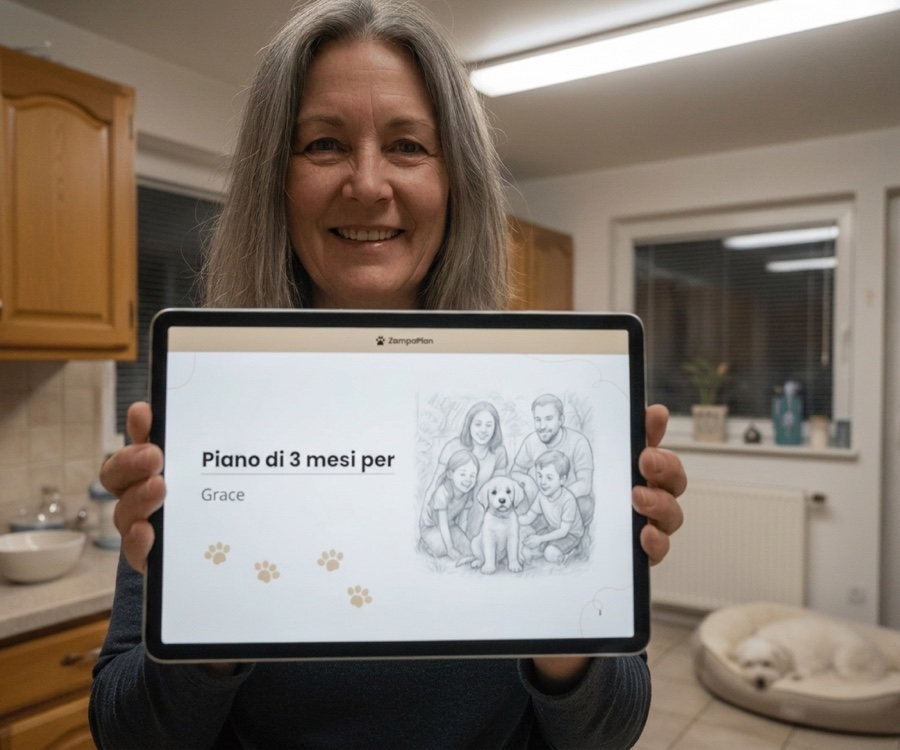

3 errori che commette quasi ogni proprietario di cani, ed è per questo che il tuo cane non ti ascolta
Tira al guinzaglio, abbaia, non risponde al richiamo o si stressa a ogni incontro: il più delle volte non è colpa del cane. Una proprietaria di cani della nostra redazione racconta i tre errori più frequenti, e cosa invece aiuta davvero.

All'epoca con Nera si trattava del guinzaglio. Una passeggiata tranquilla, finché in fondo alla via non compariva un altro cane, e la mia dolce Nera, così affettuosa, in pochi secondi si trasformava in un gomitolo che abbaiava e tirava e che riuscivo a malapena a trattenere. Mi scusavo, rossa in viso, gridavo agli altri proprietari "Non fa niente!", tornavo a casa e piangevo.
Avevo provato tutto quello che si legge in giro. YouTube in lungo e in largo. Tre guide diverse. Un'ora costosa con un addestratore, dopo la quale è andata meglio per due giorni esatti, e poi di nuovo daccapo. E alla fine, in una di quelle serate, mi sono chiesta: Deve davvero essere così costoso e così complicato? Non esiste una strada più semplice e più chiara, adatta proprio al mio cane e non a un cane da vetrina di internet?
Quella domanda non mi ha più lasciata. E mi ha portata a tre conclusioni che oggi spiegano quasi tutto ciò che va storto tra cane e persona. Non sei sola in questo, e il tuo cane non è "maleducato". Quasi tutti commettono gli stessi tre errori, senza nemmeno saperlo.
Gli errori 1, 2 e 3 che commette quasi chiunque

Qualcuna di queste situazioni ti è familiare?
Magari da voi non si tratta affatto del guinzaglio, ma di qualcosa di completamente diverso. Leggi con calma: scommetto che almeno uno di questi momenti ti ricorderà subito qualcosa:
Per quanto le cose appaiano così diverse, dietro c'è quasi sempre uno dei tre errori visti sopra. E questa è in realtà una buona notizia: se la causa è la stessa, allora lo è anche la soluzione, un piano chiaro, adatto proprio al tuo cane e che ti guida passo dopo passo.
Dove sta il problema con il tuo cane?
Fai il test gratuito di 60 secondi. Riceverai subito una valutazione della situazione e vedrai come sarebbe il tuo piano personalizzato.
FAI IL TEST PER IL CANEGratuito · 60 secondi · risultato subitoCosa dicono i proprietari

"Avevo alle spalle tre guide ed ero senza un piano. Il piano personalizzato ha finalmente dato una struttura: ora a ogni passo so cosa devo fare, e Rocky se ne accorge subito."
"Finalmente io e mia moglie tiriamo dalla stessa parte. Balu reagisce in modo del tutto diverso da quando facciamo entrambi la stessa cosa: per noi è stata una svolta."
"Ho 63 anni e, sinceramente, ero a un passo dall'arrendermi. Oggi riescono tante cose che pensavo non avrebbe più imparato. Questo piano ci ha ridato a entrambe un pezzo di quotidianità, ancora non riesco a crederci."
Era proprio questo che cercavo allora: ZampaPlan
Quello che mi mancava allora non era un nuovo trucco miracoloso, ma un piano adatto proprio al mio cane. Ed è esattamente questo ZampaPlan. Rispondi a qualche breve domanda su razza, età e comportamento, e su questa base nasce un Piano di addestramento personalizzato, settimana dopo settimana, con esercizi concreti, al tuo ritmo, da casa.

- Su misura, non standardizzato: adattato alla razza, all'età e al problema specifico del tuo cane.
- Sviluppato da veri addestratori, spiegato in modo comprensibile, passo dopo passo.
- In formato PDF stampabile, da tenere in tasca o a portata di mano sul telefono.
- Pagamento unico invece di lezioni costose, senza abbonamenti vincolanti.
E la cosa più importante: non sei mai sola in questo
Quello che con tutti i video di YouTube mi dava più fastidio: quando avevo una domanda, non c'era nessuno. Ed è proprio questo che in ZampaPlan è diverso.
Due strade quando ti blocchi
Come arrivare al tuo piano
Immagina per un attimo com'è: esci con il cane e non devi più trattenere il respiro a ogni angolo. Dici una parola e lui ti ascolta. Senza tirare, senza abbaiare, senza sensi di colpa, solo voi due, tranquilli, proprio come oggi io con Nera. Quel momento è molto più vicino di quanto ti sembri adesso, e comincia da una piccola decisione.
Scopri cosa vi frena
Un breve test ti mostrerà quale dei tre errori ostacola il tuo cane, e come sarebbe il tuo piano personalizzato.
FAI IL TEST GRATUITO PER IL CANE →In 60 secondi alla valutazione personalizzataSenza abbonamenti vincolanti · sviluppato da veri addestratori